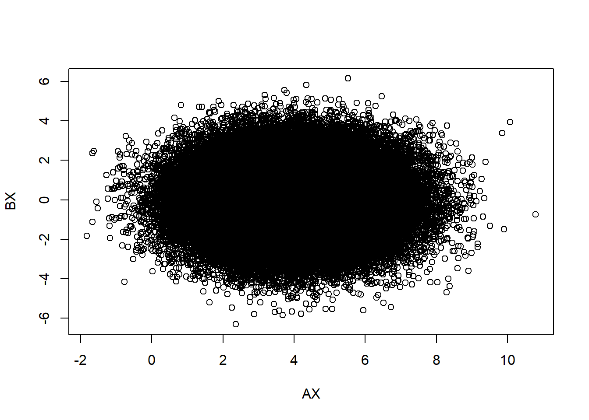
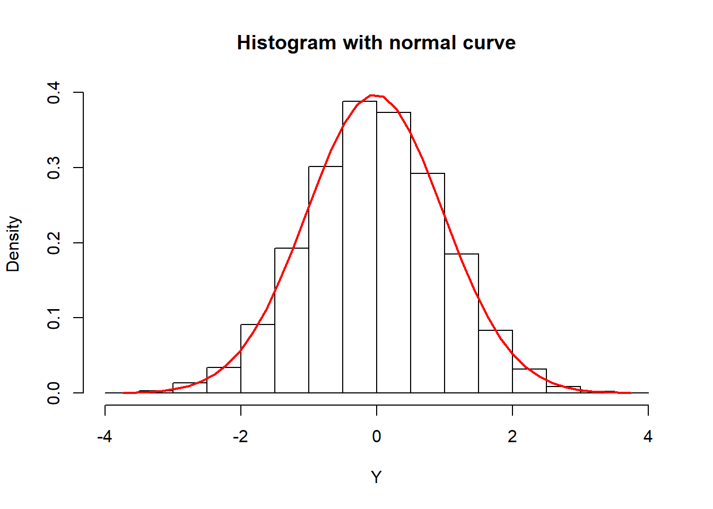

\(\huge{Part 1 : theoretical \ example}\)
I have chosen exercise 3
Random vector : \({X \sim\mathcal{N}_2(\begin{pmatrix}2\\2\end{pmatrix},\begin{pmatrix}1 & 0\\0 & 1\end{pmatrix})}\)
\(\mathbb{A}=(1,1)\ \& \ \mathbb{B}=(1,-1)\)
That the random variables \(\mathbb{AX}\) and \(\mathbb{BX}\) are independent ?
\({\mathbb{AX} \sim \mathcal{N}(\mathbb{A}.\begin{pmatrix}2\\2\end{pmatrix},\mathbb{A}.\begin{pmatrix}1 & 0\\0 & 1\end{pmatrix}.\mathbb{A}^\intercal)}=\mathcal{N}(4,2)\)
\({\mathbb{BX} \sim \mathcal{N}(\mathbb{B}.\begin{pmatrix}2\\2\end{pmatrix},\mathbb{B}.\begin{pmatrix}1 & 0\\0 & 1\end{pmatrix}.\mathbb{B}^\intercal)}=\mathcal{N}(0,2)\)
\(Cov(\mathbb{AX},\mathbb{BX})=\mathbb{A}.Cov(\mathbb{X},\mathbb{X}).\mathbb{B}^\intercal=\mathbb{A}.Var(\mathbb{X}).\mathbb{B}^\intercal=\mathbb{A}.\begin{pmatrix}1 & 0\\0 & 1\end{pmatrix}.\mathbb{B}^\intercal=\mathbb{A}.\mathbb{B}^\intercal=0\)
Simulation :
library(SimDesign)
n <- 100000 #number of observation
X <- rmvnorm(n, c(2, 2), matrix(c(1, 0, 0, 1),2,2))
A<-matrix(c(1,1),2,1)
B<-matrix(c(1,-1),2,1)
AX<-X%*%A
BX<-X%*%B
plot(AX,BX)
cov(AX,BX)## [,1]
## [1,] -0.005696654We can deduce the independence between \(\mathbb{AX}\) and \(\mathbb{BX}\).
Tab<-cbind(AX,BX)
plot(Tab[,1] ~ Tab[,2], pch = 21, bg = "gray")
abline(lm(Tab[,1] ~ Tab[,2]), col = "red", lwd = 2)\(\huge{Part \ 2 : the \ normal \ distribution \ of \ all \ marginals \ necessarily \ implies \ the \ joint \ normality \ of \ the \ whole \ random \ vector?}\)
Random vector : \({X \sim\mathcal{N}(0,1)}\)
\({U \sim\mathcal{U}[0;1]}\)
\({variable \ Z \ = \left\{\begin{matrix}-1 \:\: if \:\: u \in [0;0.5] \\1 \:\:elif\end{matrix}\right.}\)
\({We \ pose \ Y \ = ZX}\)
\(F_y(y)=P(Y\leq y)=P(ZX\leq y)=P(XZ\leq y |Z=1 )+P(XZ\leq y |Z=-1 )\)
\(F_y(y)=P(X\leq y |Z=1 )+P(-X\leq y |Z=-1 )\)
We say $ X Z = 0 $
\(F_y(y)=P(X\leq y).P(Z=1)+P(-X\leq y).P(Z=-1 )=\tfrac{1}{2}(P(X\leq y)+P(-X\leq y))\)
\(F_y(y)=\tfrac{1}{2}(F_x(y)+F_x(y))=F_x(y)\)
To conclude : \({Y \sim\mathcal{N}(0,1)}\)
Proof :
X<-rnorm(5000,0,1)
Z<-rbinom(5000,1,1/2)
Z[which(Z==0)]<- -1
Y<-(Z)*X
shapiro.test(Y) # normal ok##
## Shapiro-Wilk normality test
##
## data: Y
## W = 0.99982, p-value = 0.97The Shapiro–Wilk test is a test of normality in frequentist statistics. It was published in 1965 by Samuel Sanford Shapiro and Martin Wilk.
\(H_0 : Y\sim\mathcal{N}(a,b) \ \ \ H_1 : Y \not\sim\mathcal{N}(a,b)\)
We can’t rejected \(H_0\) , \(Y\sim\mathcal{N}(a,b)\)
Graphic proof
# Y-axis grid
Y2 <- seq(min(Y), max(Y), length = 40)
# Normal curve
funY <- dnorm(Y2, mean = mean(Y), sd = sd(Y))
# Histogram
hist(Y, prob = TRUE, col = "white",
ylim = c(0, max(funY)),
main = "Histogram with normal curve")
lines(Y2, funY, col = 2, lwd = 2) 
mean(Y)## [1] -0.02686108sd(Y)## [1] 1.004555\(Y\sim\mathcal{N}(0,1)\)
Definition :
That is \(U = (u_1....u_d) \ and \ \forall i \ : u_i \sim \mathcal{N}(a,b)\)
\(U\) it’s a gaussian vector if \(\forall \ v \in \mathbb{R}^d\) :
\(<v,U>\) is gaussian too.
Counterexample :
\(v=(1,1)\) \(<v,(X,Y)> \ = \ X+Y\)
If \(X+Y\sim\mathcal{N}(a,b) \ : \ P(X+Y=0)=0\)
Let’s calculate
\(P(X+Y=0)=P(X+ZX=0)=P(X=-ZX)=P(X=-ZX|Z=-1)+P(X=-ZX|Z=1)\)
We say $ X Z = 0 $
\(P(X+Y=0)=P(X=X).P(Z=-1)+P(X=-X).P(Z=1)=\tfrac{1}{2}\)
So it’s not posible if \(X+Y\sim\mathcal{N}(a,b)\)
We can conclude : \(X+Y \not\sim\mathcal{N}(a,b)\)
So \((X^T,Y^T)^T can't \ follow \ a \ \mathcal{N}_2\)
R proof :
# Y-axis grid
XY2 <- seq(min(X+Y), max(X+Y), length = 40)
# Normal curve
funXY <- dnorm(XY2, mean = mean(X+Y), sd = sd(X+Y))
# Histogram
hist(X+Y, prob = TRUE, col = "white",
ylim = c(0, max(funXY)),
main = "Histogram with normal curve")
lines(XY2, funXY, col = 2, lwd = 2) We can see too much value in zero.
Shapiro test ?
shapiro.test(X+Y)##
## Shapiro-Wilk normality test
##
## data: X + Y
## W = 0.85947, p-value < 2.2e-16In view of p-values we can conclude the none the joint normality with normal distribution of all marginals.